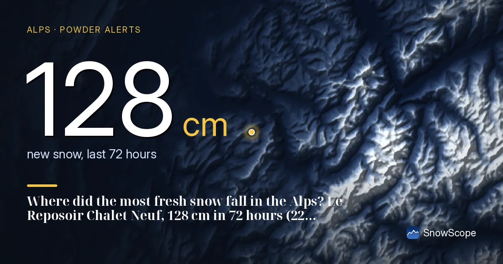

Where did the most fresh snow fall in the Alps? Le Reposoir Chalet Neuf, 128 cm in 72 hours (22 November)
Where did the most fresh snow fall in the Alps? Fresh snow at Le Reposoir Chalet Neuf: 128 cm in the last 72 hours, including 88 cm in the last 24. SnowScope now puts about 42 cm on its upper slopes. Confidence: good for the trend, lower for any single number.
See the live snow forecast for Le Reposoir Chalet Neuf in the SnowScope appSnow depth, powder alerts and the 3D map, free.
The fresh-snow numbers
Next on the list: La Grave, Alpe d'Huez Grand Domaine and Orelle, with 127 cm, 123 cm and 121 cm in 72 hours.
The snow map in the Alps shows 108,680 km² of white ground today and snow at 1,104 of 1,204 resorts.
| Resort | Snow depth | New snow, 72 h | Coming, next days | Top |
|---|---|---|---|---|
| Le Reposoir Chalet Neuf | 42 cm | 128 cm | 26 cm | 1,620 m |
| La Grave | 171 cm | 127 cm | 57 cm | 3,543 m |
| Alpe d'Huez Grand Domaine | 125 cm | 123 cm | 57 cm | 3,306 m |
| Orelle | 166 cm | 121 cm | 39 cm | 3,221 m |
| Les Grands Montets | 86 cm | 119 cm | 39 cm | 2,768 m |

The snow still to come
Up to 26 cm of new snow is forecast at Le Reposoir Chalet Neuf over the next days.
Forecasts move: the timing is usually more reliable than the totals, so check again two days before you go.
At about 1,471 m, Le Reposoir Chalet Neuf has 8 cm today; a normal 22 November has 16 cm there.
That is more than in 9 of the 46 past winters on this date.
In past winters the best snow at Le Reposoir Chalet Neuf usually came mid-February / mid-March.
Day by day at Le Reposoir Chalet Neuf: Sunday 22 November 88 cm; Monday 23 November 16 cm; Wednesday 25 November 10 cm.
Height by height at Le Reposoir Chalet Neuf: 1,323 m 8 cm on the ground, 25 cm more in the next 7 days; 1,471 m 16 cm on the ground, 39 cm more in the next 7 days; 1,620 m 24 cm on the ground, 47 cm more in the next 7 days.
Station check
Ground check, Defreggerhaus station (2,978 m): 55 cm on the ground on 21 November, 37 cm new in 24 hours. The Bourg-St-Pierre station (1,668 m) adds a real measurement: 39 cm on the ground on 20 November, 31 cm new in 24 hours. Ground check, Schapleralpa station (2,354 m): 49 cm on the ground on 21 November, 30 cm new in 24 hours.
Station values: measured, one point. Read them together.
The forecast in short
Next round by 25 November: 57 cm at La Grave, 57 cm at Alpe d'Huez Grand Domaine and 39 cm at Orelle, according to our forecast.
Forecasts a few days ahead can change: look at the map again the day before you travel.
By height and slope
Three heights at Le Reposoir Chalet Neuf, three numbers: 24 cm at the top (1,620 m), 16 cm at mid-mountain (1,471 m), 8 cm at the base (1,323 m).
On 24 November the freezing level at Le Reposoir Chalet Neuf sits at 870 m to 2,360 m, over the top of the resort (1,620 m): rain or wet snow could fall on all slopes.
Avalanche danger and safety
After fresh snow, wind builds drifts on sheltered slopes. Off-piste, the first days after a snowfall need the most care.
Tips for skiers
- The best powder lasts a morning, not a week. Go early, before the sun and the crowds get to it.
- Shade protects the snowpack. High, north-facing slopes get less sun, so their snow lasts longer than on the south side.
- Before you ski off-piste or go touring, read the official avalanche bulletin (links below).
- Snow on the map does not mean a resort is open: check lifts and opening dates on the resort's website.
- Get a powder alert in the SnowScope app to know when Le Reposoir Chalet Neuf gets fresh snow.
About these numbers
Resort snow depths are the deepest snow on the resort's upper slopes on the date shown; they are estimates for an area, not a measurement at one point. Forecasts can change. Always read the official avalanche bulletin before going off-piste.
Official avalanche bulletins: EAWS (Alps)
Cite this report
For research, teaching or the press: the numbers and charts are free to reuse under CC BY 4.0 with this citation.
SnowScope (2026), Where did the most fresh snow fall in the Alps? Le Reposoir Chalet Neuf, 128 cm in 72 hours (22 November), https://snowscope.app/blog/en/2026/11/alps-le-reposoir-chalet-neuf-fresh-snow-powder-alert-22-november-2026.html, accessed 2026-11-22
SnowScope (Atlas Labs). (2026, November 22). Where did the most fresh snow fall in the Alps? Le Reposoir Chalet Neuf, 128 cm in 72 hours (22 November). SnowScope snow reports. https://snowscope.app/blog/en/2026/11/alps-le-reposoir-chalet-neuf-fresh-snow-powder-alert-22-november-2026.html
BibTeX
@misc{snowscope2026alpslereposoirchaletneuf,
author = {{SnowScope (Atlas Labs)}},
title = {Where did the most fresh snow fall in the Alps? Le Reposoir Chalet Neuf, 128 cm in 72 hours (22 November)},
year = {2026},
month = nov,
howpublished = {\url{https://snowscope.app/blog/en/2026/11/alps-le-reposoir-chalet-neuf-fresh-snow-powder-alert-22-november-2026.html}},
note = {Published 2026-11-22 11:12 UTC; accessed 2026-11-22}
}· CC BY 4.0 · Methods, data and tools →
Le Reposoir Chalet Neuf: snow and temperature by height, this winter vs last (tools) →
Follow Le Reposoir Chalet Neuf
Free: a message when fresh snow is coming, and the forecast every morning.
More snow reports

Chamonix's next week brings 27 cm at the top (8–46 cm range), peaking on Wednesday 25 November. Forecast for 23–29 November 2026.

La Grave's top slopes near 3400 m will collect 49 cm in the week of 23–29 November 2026, with Wednesday 25 as the peak day. Data from 16 November.

Alps snow report, 21 November: Alpe d'Huez has 92 cm on upper slopes. Orelle leads the region with 136 cm. Fresh snow incoming by Tuesday.